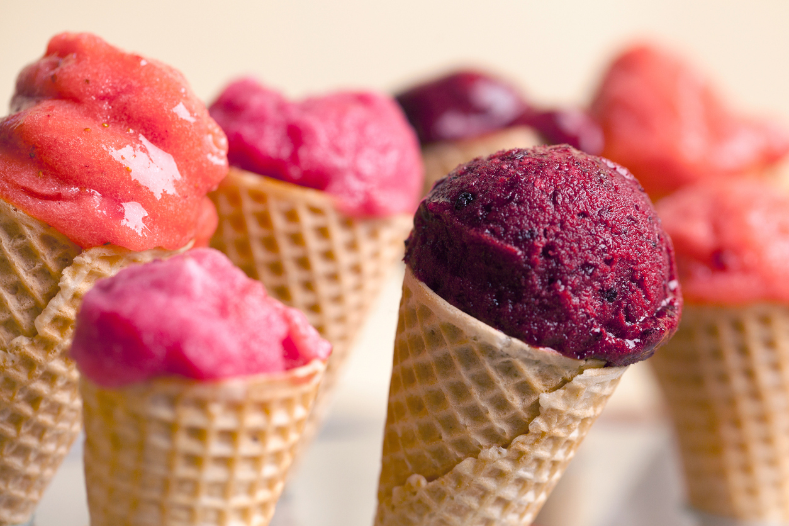
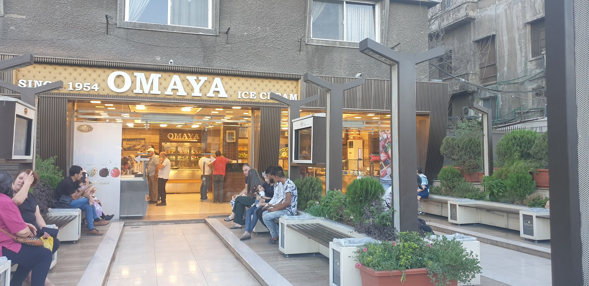
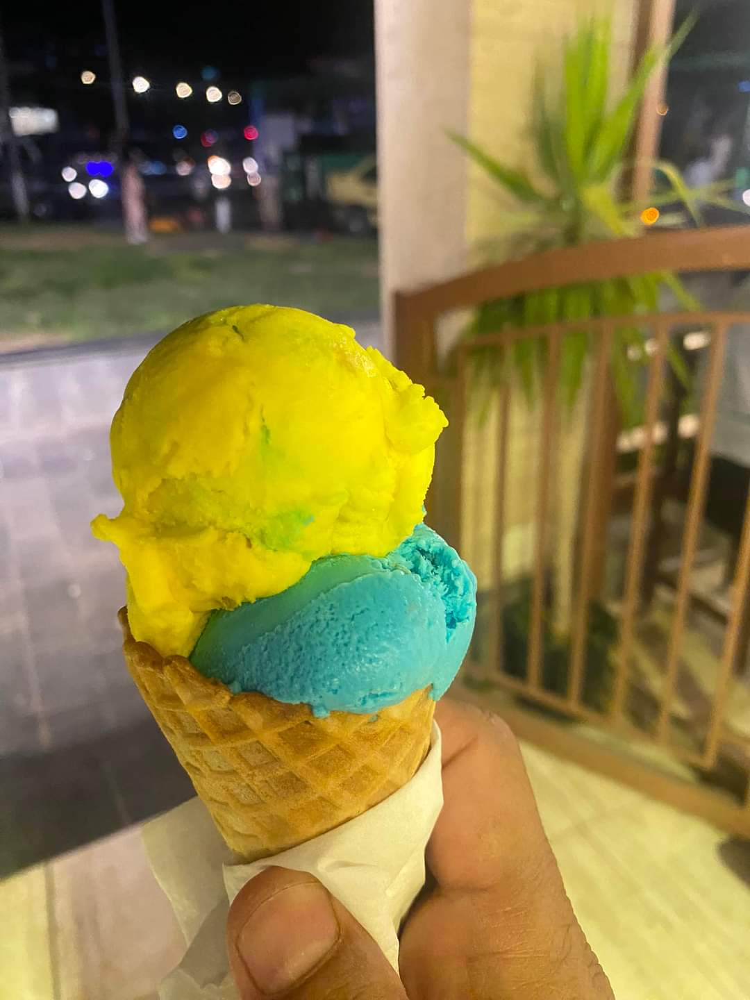
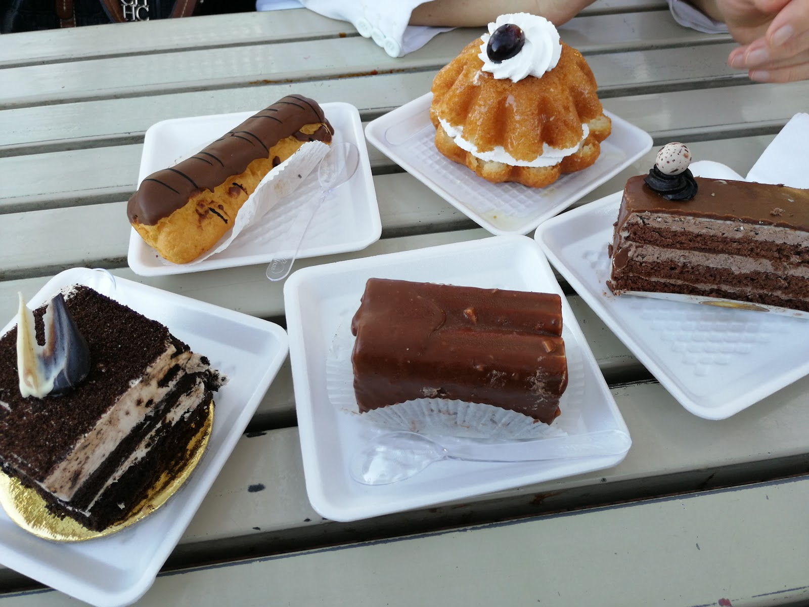
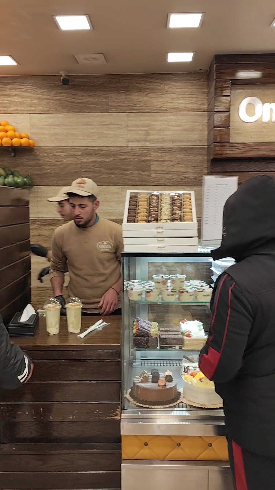
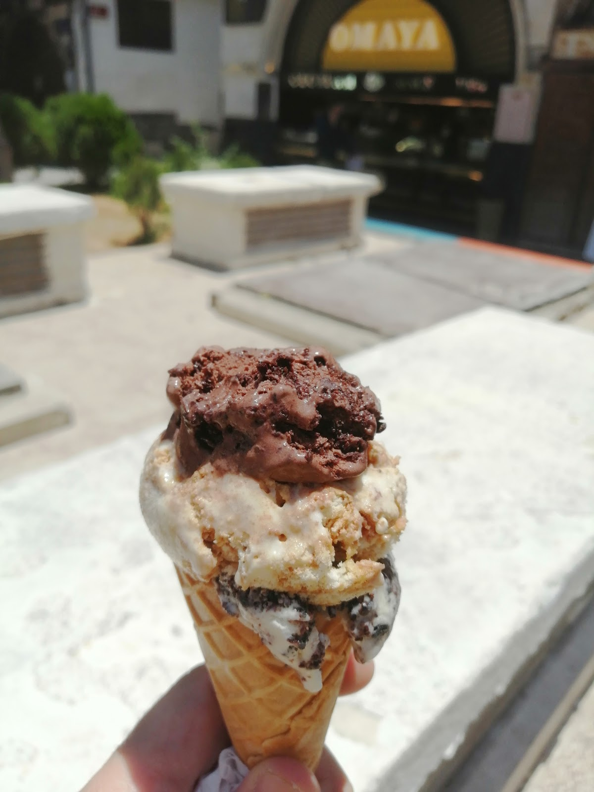
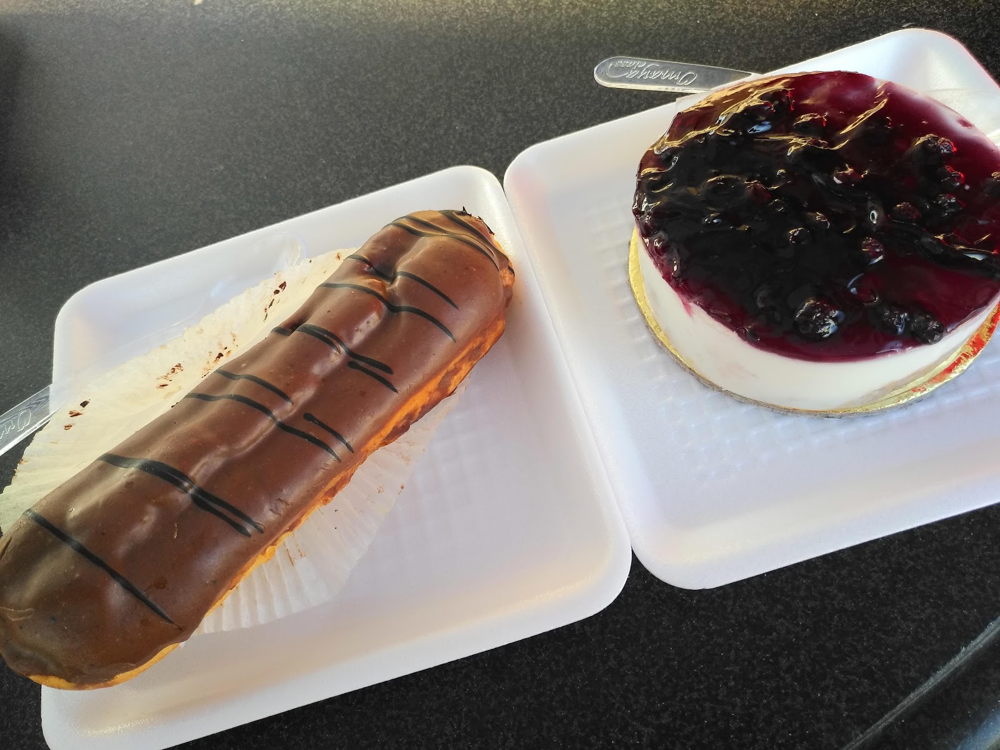
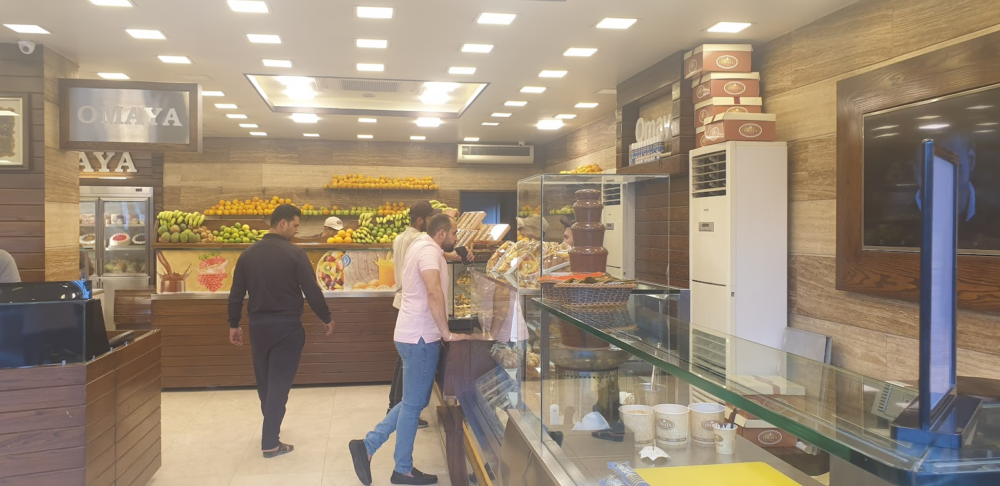

سوربيه فواكه بألوان الصيف، بوظة على القالب، عصير طازج وكيكات — وتراسٌ مفتوح تحت سماء المدينة القديمة.Fruit sorbets in summer colours, scooped ice cream, fresh juice and cakes — and an open terrace under the Old City sky.

على شارع القس بن ساعدة في دمشق القديمة، صار لمحل أمية طقسٌ يعرفه أهل الحيّ: تجلس على التراس بين الأحواض الخضراء، ويمرّ الصحن تلو الصحن — بوظة، سوربيه، كيك، وعصير معصور لحظتها. لافتتنا تقول «منذ 1954»، والجلسة نفسها ما تغيّرت.On Qiss Ben Saideh street in Old Damascus, Omaya has a ritual the neighbourhood knows by heart: you sit on the terrace between the green planters, and the plates keep coming — ice cream, sorbet, cake, juice pressed on the spot. Our sign says "since 1954", and the sitting itself hasn't changed.
جوّا المحل، برّاد الواجهة مليان أطباق وكيكات، والفواكه مصفوفة على الرفوف تنتظر العصّارة. زوّارنا يكتبون عن «الجودة والأسعار المقبولة والابتسامة» — ونحن نكتفي بأن نضيف: الكراسي على التراس بانتظاركم.Inside, the display fridge is stacked with desserts and cakes, and fruit is lined on the shelves waiting for the juicer. Guests write about "the quality, the fair prices and the smiles" — we'll only add: the terrace chairs are waiting.


شمّ الهوا على التراس مساءً وبيدك قمعٌ بكرتين — النكهات تتبدل، والمزاج واحد.An evening on the terrace, cone in hand, two scoops high — the flavours rotate, the mood stays.

إكلير وسافارين وقطع كيك تتوزع على الطاولة — صحنٌ لكل واحد، وشوكة زيادة للمشاركة.Éclairs, savarins and cake slices spread across the table — a plate each, and a spare fork for sharing.

برتقال ومانغا وموز مصفوفة فوق الكاونتر — تُعصَر أمامك وتوصَل لإيدك باردة.Oranges, mango and bananas lined above the counter — pressed in front of you, handed over cold.
تراسنا على الشارع القديم مفتوح من الصبح حتى منتصف الليل — قهوة العصر، بوظة بعد العشا، أو عصير بارد بين جولتين في المدينة القديمة.Our terrace on the old street is open from morning till midnight — afternoon coffee, after-dinner ice cream, or a cold juice between two walks through the Old City.



"Ice cream, fresh juice, pastry — high quality of service, affordable prices! Smiles and nice staff! I would love to visit again!"
"Amazing ice cream shop, offers a wide variety of flavors."
"Best ice cream in Damascus. They have many flavors."
★ 4.4 / 5 — 107 تقييم على غوغلGoogle reviews
| يومياًDaily | 9:00 — 24:00 |
من الصبح حتى منتصف الليل — والتراس أحلى ما يكون وقت الغروب.Morning to midnight — the terrace is at its best around sunset.
شارع القس بن ساعدة — دمشق القديمة
للسؤال والطلبات اتصلوا بنا: +963 11 471 1177For questions and orders call: +963 11 471 1177
✆ اتصلوا بناCall us افتحوا الخريطةOpen in Maps فيسبوكFacebook